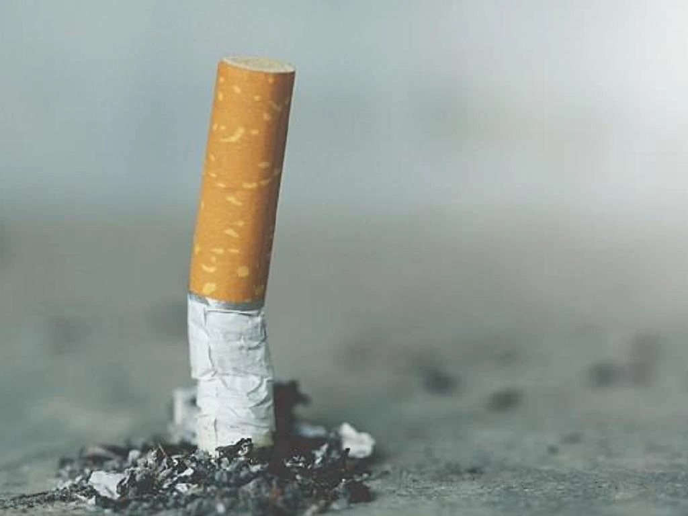

Tình yêu và gia đình
Trầu cau
Tình yêu là gì? Là ta yêu một người mỗi ngày trong một năm. Mỗi năm trong một đời người...Xây dựng hạnh phúc gia đình qua bữa cơm hàng ngày
Nói đến hạnh phúc gia đình chúng ta thường mô tả bằng những từ thật đẹp đẽ và được thể hiện qua những giá trị đạo đức rất đáng trân trọng như tình yêu, lòng trung thủy, tình nghĩa vợ chồng, lòng yêu thương, hy sinh cho con cái, sự quý trọng, hiếu đễ của con cháu với cha mẹ, ông bà...Sức khỏe
10 lời khuyên trong dinh dưỡng
Cơ thể chúng ta cần nhiều chất dinh dưỡng từ nhiều nguồn lương thực khác nhau. Vì vậy chúng ta nên thay đổi các loại lương thực khác nhau. Chúng ta không cần kiêng chi cả - quan trọng là chú ý đến số lượng...Làm sao để bỏ thuốc lá?
 Sức khỏe của chính bạn. Không hút thuốc lá tức là giảm thiểu đáng kể rủi ro mắc các loại bệnh ung thư và sức khỏe sẽ tăng lên đáng kể so với khi còn hút thuốc.Du lịch
Các tour mới nhất
Các điểm du lịch nổi tiếng trên thế giới
Ẩm thực